如何手动编译bind，如何使用view实现智能DNS解析，以及如何对DNS服务器进行压力测试。
如何手动编译bind，如何使用view实现智能DNS解析，以及如何对DNS服务器进行压力测试。
今天带大家来看看如何手动编译源码bind，自己手动编译安装的很多文件都要自己去建立，配置文件也要从零写起，而且没有服务启动脚本，需要自己编写启动脚本。
实验规划：
1、在192.168.1.200这台主机上编译安装bind，完成后为named服务编写启动脚本，加入到service。
2、配置view实现智能DNS解析：当请求解析www.tuchao.com，来源为192.168.1.0/24时候，解析到192.168.1.100。其他的来源都解析到外网地址，1.1.1.1
3、使用queryperf 对服务器进行压力测试，看看每秒最多能回应多少请求。
我们先按顺序一个一个来，首先准备编译bind，在编译之前请确保系统已经安装了开发组件。
# tar -zxvf bind-9.10.0-P1
# cd bind-9.10.0-P1
# ls
这些就是源程序：
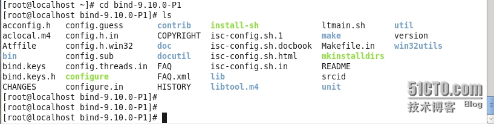
# ./configure --help 查看配置的帮助信息
# ./configure --sysconfdir=/etc/named --prefix=/usr/local/bind --enable-epoll --disable-ipv6 --disable-chroot --enable-threads
这就已经在检测编译环境，按配置需求生成makefile了。
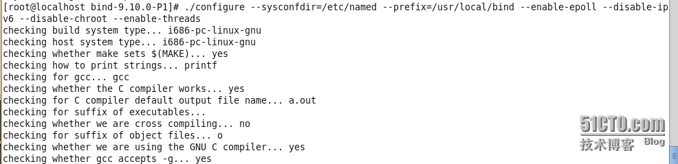
检测完成以后：
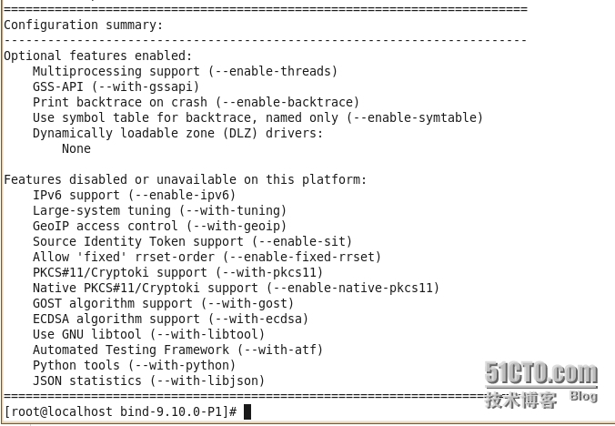
# make && make install
等待编译安装完成。
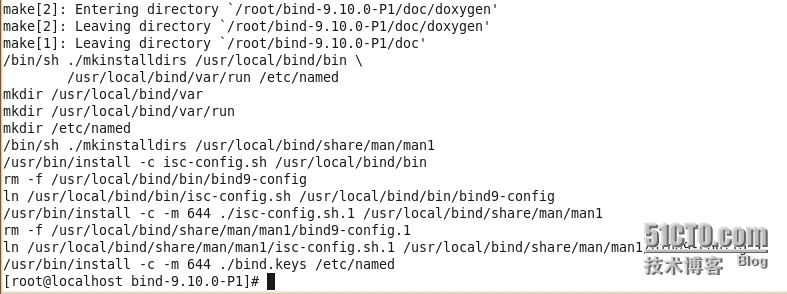
为了启动方便，我们先为named编写服务脚本。
# vim /etc/rc.d/init.d/named
下面是小菜写的脚本，可能不是很完善，不过可以给大家做做参考。
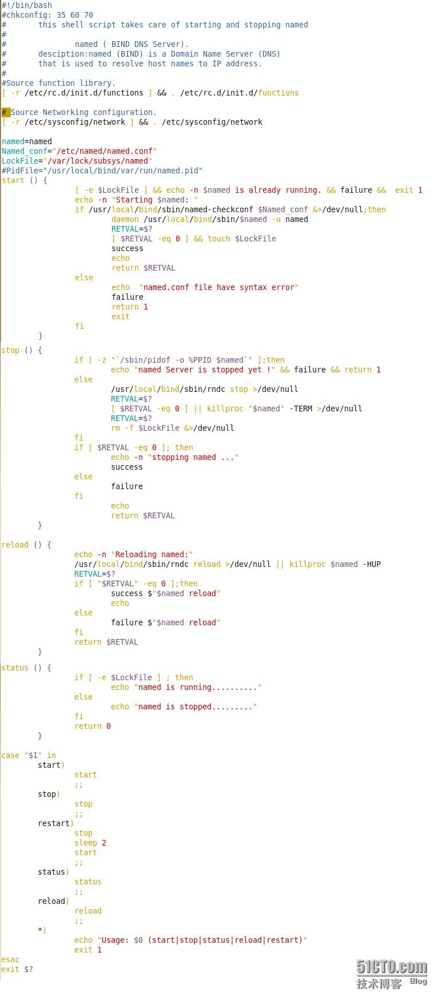
好，脚本完成了，接下来修改PATH环境变量。
# vim /etc/profile.d/bind.sh
export PATH=/usr/local/bind/bin:/usr/local/bind/sbin:$PATH
包含man文件。
# vim /etc/man.config
MANPATH /usr/local/bind/share/man
接下来，创建/etc/named/named.conf主配置文件。
# vim /etc/named/named.conf
参考或者写入以下内容：
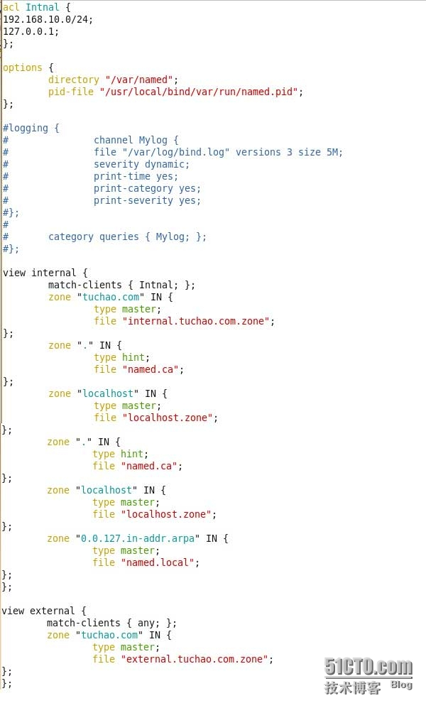
然后去创建区域解析文件。
根文件：
# mkdir /var/named
# dig -t NS . >/var/named/named.ca
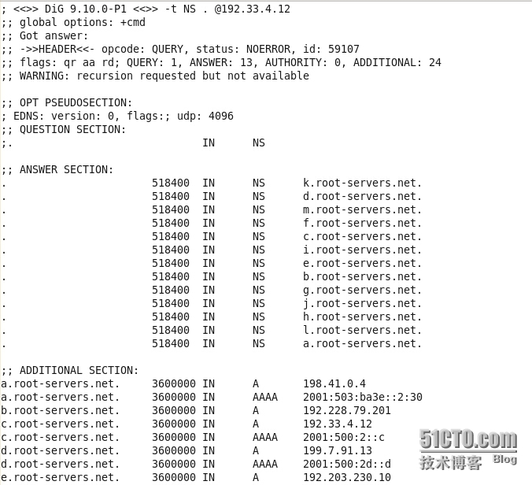
localhost.zone 本机正向区域解析文件：
named.local 本机反向区域解析文件：
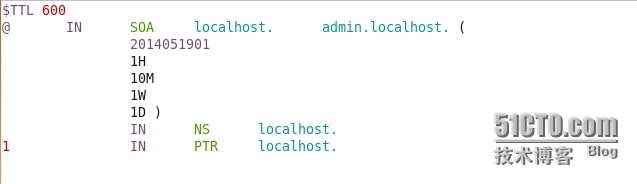
internal.tuchao.com.zone "tuchao.com" 区域解析文件：
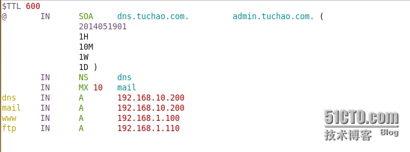
external.tuchao.com.zone “tuchao.com”区域解析文件：
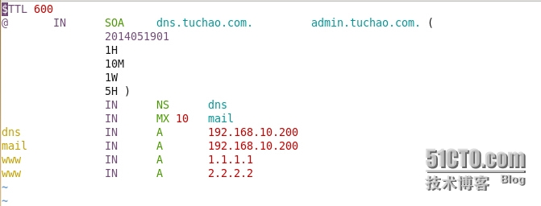
全部都配置完成了，接下来用我们刚刚写的脚本，启动下named服务。
# /etc/init.d/named start
看下，是不是已经启动。
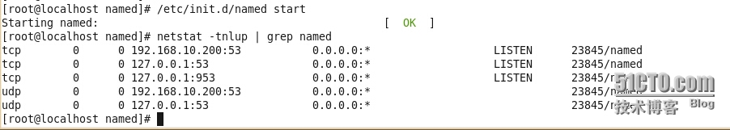
看下能不能实现智能解析：
我们先用本机解析下www.tuchao.com
解析成功了哈，解析的结果是192.168.1.100。
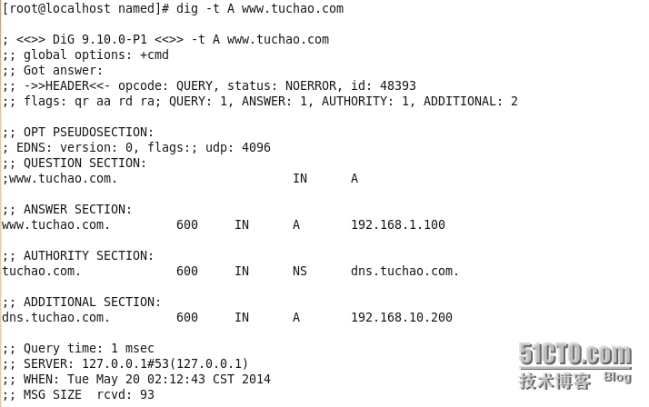
这次我们把来源换成172.16.0.2 这台主机请求，看看解析地址会不会变成外网的。
# dig -t A www.tuchao.com
结果是不是变成了1.1.1.1 ,这就是智能DNS可以根据来源，判断以哪个区域文件进行解析。
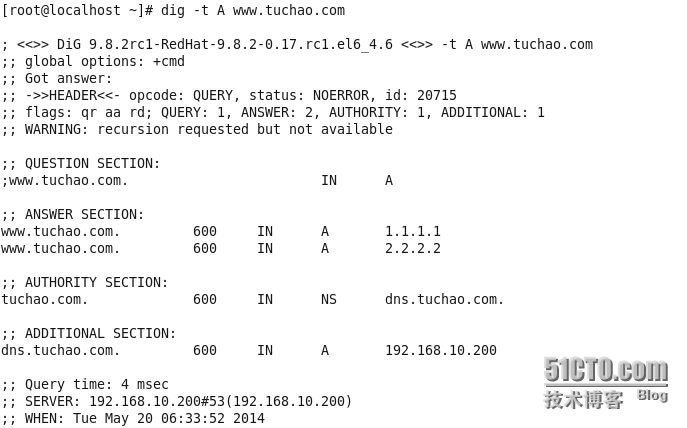
想必看到这里，大家都有点累了吧，其实小菜也写累了，但是坚持一下一鼓作气搞完。
如何对服务器进行压力测试，我们要用的就是queryperf 这个工具，我们先去编译它。
# cd /root/bind-9.10.0-P1/contrib/queryperf
# ./configure
# make
编译好后，直接拷贝到/bin目录下就可以使用了。
先创建一个查询文件，如# vim /tmp/cha.txt
写入类似内容，复制至数万行，才能达到测试效果。
基本用法：
queryperf -d 指定查询列表文件
-s 指定Server
现在来测试下试试：
# queryperf -d /tmp/cha.txt -s 192.168.10.200
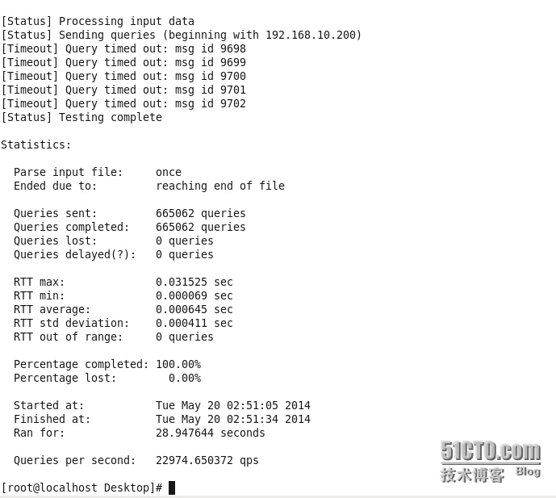
总共查询了665062次，完成665062次。
平均每秒可以响应22974次。
性能还不错哦！
好了，任务完成了，该睡觉了。
以上内容纯小菜手打，实验亲测截图，有问题欢迎与我交流QQ：1183710107
 |
2人 |
了这篇文章 |